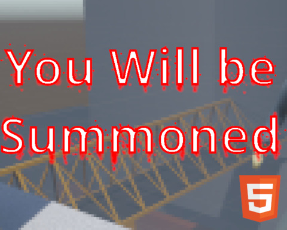

The Summoner Serving Justice

Description
Step into the shoes of a summoner of the court. In the cyberpunk future, everyone know parkour. A new law came into effect (2024) requiring people to be served a summons or the case is thrown out. You are the best summoner.
Trained to throw non lethal projectiles to slow and soften a target. (Left mouse) Every good summoner is also a master of sliding (left control or C) and wall running (jump near a wall). Once on top of their target, they strike choking (Mash space) out their victim before stapling the summons to them, ensuring the summons is served.
Screenshots & Images

Play The Game
Feedback & Comments
"I liked the visual and the music. The gameplay idea is pretty fun, and I had fun trying the game. I got stuck on bridges walls a couple of times. Overall a pretty good compo game." - jk5000
"The music and backstory were great! Very creative :) I also enjoyed the level design, it felt like a very interesting place to parkour around in and would have been even better with more levels (or more victims after the first one)." - PerfectSquare
"Wow this is intense and challenging, the movement feels quite smooth already, great job! Makes me want to play Mirrors Edge again. ~~It would be nice if the character would slide when they crouch during sprinting.~~ Oh it looks like there is sliding in the game, for some reason it doesnt feel \"slidey\" enough for me ^^" - vinzBad
"Wow movement turned out excellent! Funny thing I was mashing space so good that I mashed right through the ending screen and out of the program lol. Nice work in record time!" - khaotom
"That was a fun short game! I imagine it must have been hard to get those controls to work." - adam-gould
"Took a couple of tries to get used to the controls (I've never played a parkour game before) but it's quite a good game and the music was impressive.! Well done!" - cogcomp
"I would totally play a full version of this. Very smooth and intuitive movement. Good level design too, I had a cool moment where I was running on top of the crane while he was running inside of it, pretty cinematic haha. Also, I don't think I own a stapler too now that I think about it." - Eric Nguyen
"That is so rare for people to make a fully 3D game in the span of a 48-hour game jam! Very impressive that you got in level design, characters, music, and gameplay that actually works. The wall running was effective. Funny take on summons too :) Nice job." - candlesan
"Really impressive entry for a compo game. It felt pretty good, and the in-game way of describing the controls is also a really nice touch. I could see a more fleshed out version of this being a really fun full game!" - OhFiddleDiddle
"Today is not my day. It's an interesting concept and I like the game. Good job!" - Baluj
"Pretty cool parkour game, I played it in browser and it felt kind of weird; the mouse was too sensitive, and I think the jumping was supposed to go higher the longer space is pressed, but quickly tapping space made it feel like the jump ended too quickly. The parkour parts were great though, I really liked gliding across the platform. The AI of the opponent seemed pretty simple like it was on a predetermined path, I think a cool twist or addition would be some dynamic AI where it could see me coming and move in a different direction. Overall a pretty solid game, and especially impressive given you made this in such a short time. Well done!" - LDJam user 374168
"Cool game, reminds me a lot of Mirror's edge. The gameplay is very smooth. I missed some of the last pieces of dialog because I was still smashing space. I'd suggest a different button for advancing text." - Flying Dog Fish
"Fun short game. Reminded me of Mirror's Edge a little bit! Just wish there were more levels ;)" - zablas
"It is quite awesome and ambitious! While hitting, shooting or even touching could be perfectly acceptable to eliminate the enemy, inclusion of shot to slow down and button mash to eliminate mechanics are admirable! Great job!" - KrummSakura
"Got a laugh out of me. Felt really cool. I, like others, felt mirror's edge a little bit. I wanted to catch that guy and then I mashed that space bar!" - commanderstitch
"very consistent game, really enjoyed playing it! good job!" - kiv